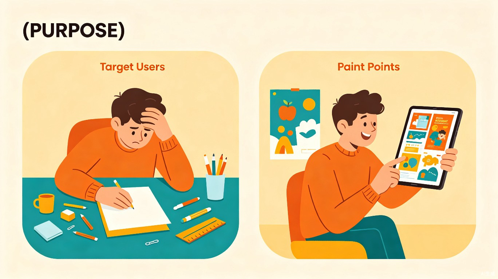
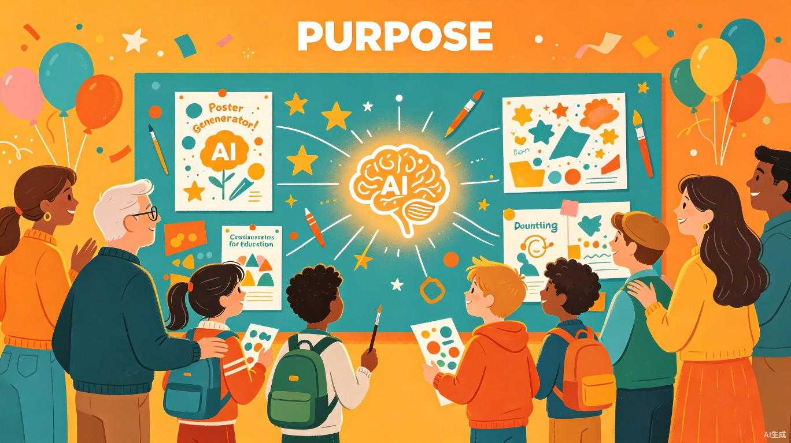

解决什么问题
手抄报是锻炼信息整合与艺术设计的综合实践，但"从零开始"的空白恐惧让无数孩子和家长头疼不已。
核心痛点
学生面对空白纸张，往往不知道如何规划布局、设计版式和分配文字与绘画区域，导致大量时间浪费在排版上，甚至因"画不好"而产生挫败感。
创意灵感
如果有一个工具，能根据主题智能生成结构清晰、分区合理的空白线稿模板，就能把孩子的精力从"怎么排版"解放到"填什么内容"和"怎么美化"上。
产品形态
一个简洁的 HTML 网页应用，无需安装，打开即用。输入主题和基本要求，即可获得可直接打印的空白模板。
我们的目标不是替孩子完成作业，而是为他们搭好脚手架，
让创作变得简单、有趣、有成就感。
目标用户及痛点
深入理解谁需要这个工具，以及他们在手抄报作业中遇到的真实困境。

左：传统手抄报作业的困境；右：使用智能模板后的轻松体验
目标用户
小学生、初中生及其家长；也适用于需要制作简易手抄报的学校老师或教育机构。核心用户群体为 6-14岁学生 及其家长。
使用场景
当孩子领到"以XX为主题制作一份手抄报"的作业时，家长或孩子打开网页，输入主题和基本要求，即可获得一份可直接打印的空白模板。
三大核心痛点
📏 排版困难
面对白纸，完全没有版式概念。标题放哪儿、写多少字、图画多大，毫无头绪，"空白恐惧"让孩子迟迟无法动笔。
⏰ 时间耗费
大量时间浪费在画格子、反复修改布局上。原本应聚焦内容创作的宝贵时间，被机械性的排版工作严重压缩。
👥 代劳困境
家长因孩子效率太低或效果不佳而忍不住代劳，使作业失去锻炼意义，甚至引发亲子矛盾。
价值与意义
智能手抄报模板生成器不仅是一个工具，更是连接创意与表达的桥梁。

AI赋能教育，让每个家庭的手抄报作业都成为愉快的创作体验
效率提升
将排版和构思框架的时间从半小时以上缩短至 1-2 分钟。孩子能把精力聚焦在内容创作和艺术装饰上，作业质量显著提升。
教育辅助
提供"脚手架式"的支持，降低综合实践作业的完成门槛。帮助学生建立信心，逐步掌握版式设计的基本逻辑，实现从"扶着走"到"自己跑"。
家庭和谐
有效缓解因手抄报作业引发的家庭矛盾，让家长从"代劳者"转变为"鼓励者"，使作业真正回归孩子本位，增进亲子互动质量。
技术应当是教育的放大器，而非替代者。
我们用最简单的交互，释放孩子最纯粹的创造力。
让每一份手抄报都成为孩子的骄傲
智能手抄报模板生成器 — 用AI化解排版难题，让创作回归本质。期待与您共同探索教育科技的美好可能。